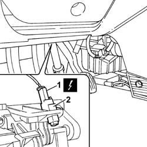
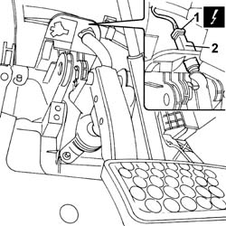

5550D10 brake light switch - r+r
- Path
- Procedures > 55 ELECTRICAL EQUIPMENT > 5550 WARNING AND MANOEUVRING INDICATORS > 5550D BRAKE AND REVERSING LIGHTS > 5550D10 brake light switch - r+r
- Kind
- repair procedure (removal / refitting; the operation number is the code)
- Applies to
- all engines; all production periods
- Interactive page
- https://sloeber94.github.io/elrnDB-fPnd/en/#/2752990
Applies to: all engines; all production periods
 Removing
Removing
 Refitting
Refitting1. Disconnect the electrical connection.
 | Name | Connector |
|---|---|---|
1 | Brake pedal switch | I30 |
2. Rotate and remove the switch on the brake pedal.

Applies to: engines: 1.2 8v; all production periods; only with equipment: Smart gearbox
Removing
RefittingDisconnect the battery negative terminal.
1. Disconnect the electrical connection for the switch on the brake pedal.
| Name | Connector |
|---|---|---|
1 | Brake pedal switch | I30 |
2. Remove the brake pedal switch.

Applies to: all engines; all production periods
Refitting
RemovingPosition the brake pedal switch and rotate it until it locks.
Connect the electrical connection.
| Name | Connector |
|---|---|---|
- | Brake pedal switch | I30 |
Applies to: engines: 1.2 8v; all production periods; only with equipment: Smart gearbox
Refitting
RemovingFit the switch in position.
Connect the electrical connection for the brake pedal switch.
| Name | Connector |
|---|---|---|
- | Brake pedal switch | I30 |
Connect the battery negative terminal.